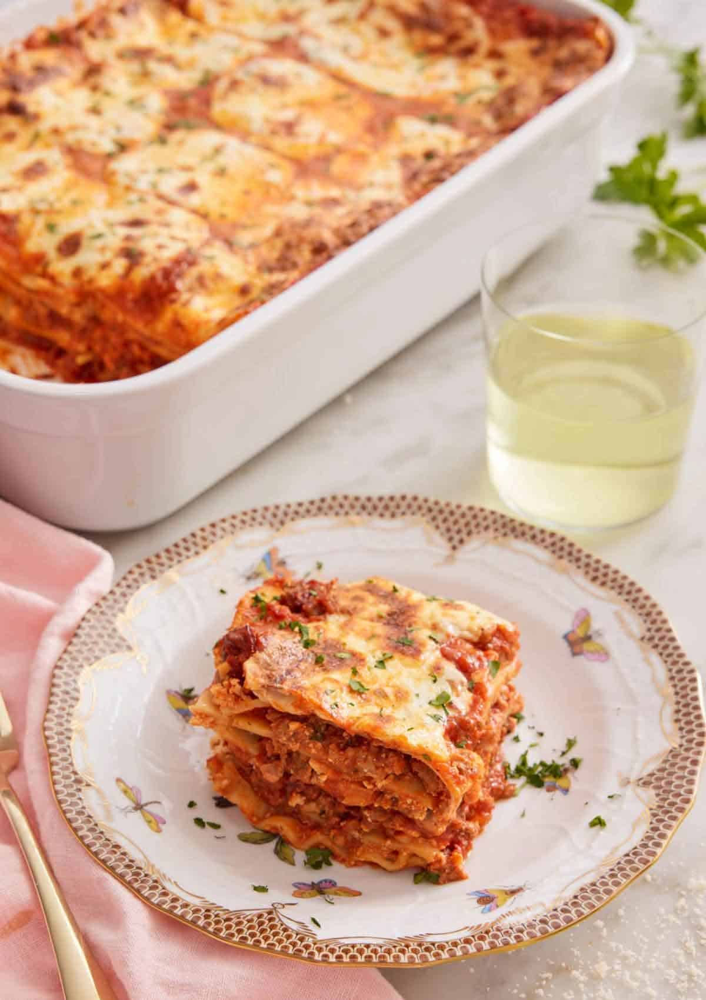

Lasagna yummy. You know it yummy. Garfield know it yummy.
He eat it. You eat it. Not on Monday. Yummy. Eat lasagna.
for the meat sauce:
for the cheese filling:
for the assembly:
for the meat sauce:
for the cheese filling:
for the assembly: